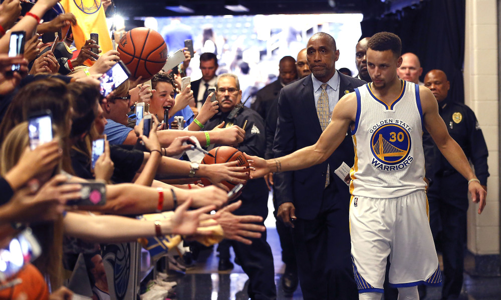
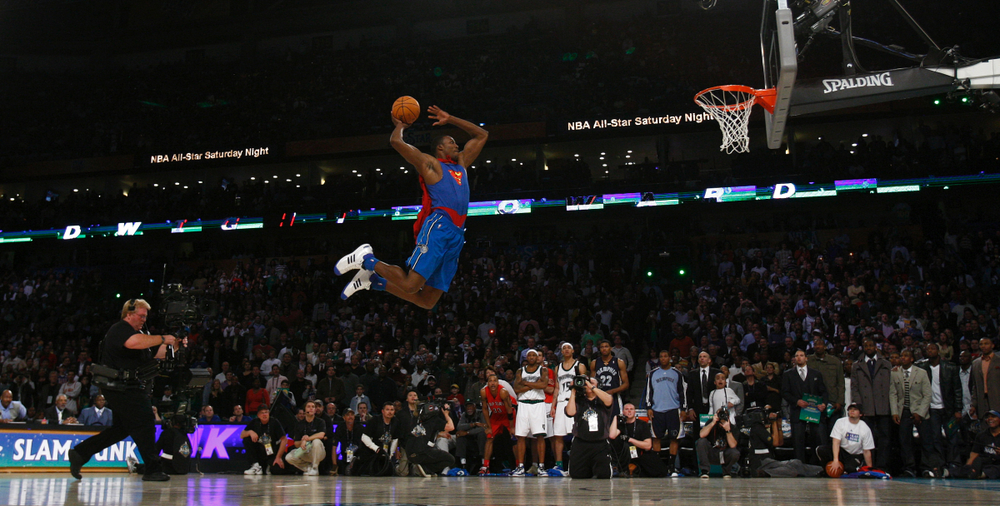

"I AM LIKE A SUPERHERO, CALL ME BASKETBALL MAN”
He must be tall, dark and shimmering with sweat. His expression showing no one could ever reach his level of greatness. But this radiation of perfection is not only seen when on the court. This type of supernatural human excels in every aspect of life. This man embodies the term MVP trough everything he does. He is that what only a few achieve and many aspire. This unrealistically perfect human might seem like a fictional character, only he is also seen in our world. The world where not only children can have unrealistic role models, but where adults are persuaded to also see the supernatural. They will look up to a man not only for its athletic abilities, but also expects him to be socially and politically engaged, portray the perfect family life, be an actor and musician while selling us everything he consumes. This adult Disney World portrays a ma- ture dream, such is only able to exist in America. As a non American basketball spectator this level of fandom is non existent in my world. American basketball is no longer a sport, it is a world created out of a game starring two teams that play a 40 minute match that is turned into an individual career selling the perfect life. The story of the underdog striving to become the hero is a story as old as time itself. It is a fantasy told in fairytales and mythes, the legend that becomes supernatural. It could be explained as ignorance or even stupidity to think this is realistic. But is it really that stupid to think that our fantasies have become reality? As a child you’ll watch Disney movies thinking this is a possible future, in a world where you are born as a poor unwanted person to growing up and overcoming this obstacle by fighting for yourself. You see it in Aladin, the boy that wandered the streets with no successful future. He finds a lamp that grands him 3 wishes. These wishes bring him to a world that is unknown to him, but by fighting for his place he ends up in the palace with the princess riding a magic carpet. After reaching a certain age we forget the magic that the story contains and act as if this is pure fiction. We don’t realise that growing up does not mean stop believing in fairytales, we just create them in other aspects of our life. It is a world we created and now see as amusement, in which we create our own role models expecting them to rise to inhuman levels of perfection for our own sense of imaginative reassurance. The issue with this mature fantasy is that actual humans live in this world and not cartoons. And only a few are cut out for this role. It is a performance being performed 24/7 to entertain the ordinary and sell them the unreachable world they live in.
WHAT IS A SUPERFAN fandom NOUN 1 mass noun The state or condition of being a fan of someone or something. 1.1 count noun The fans of a particular person, team, fictional series, etc. regarded collectively as a community or subculture.‘the Breaking Bad fandom’ There are fans and there are fanatics. Where fans prefer a certain person the fanatics idolises this person. This gratifications rises to a level where it could become obsessive. The fanatic has a daily routine in which the obsession is a big part. They will paint their torso’s in team colours and scream at their tv from the couch in their living room. But also looking for online supporters that share the same obsession. In that case the fanatic becomes part of a fandom, a platform that mostly operates online and will gather every bit of information to portray this person as a hero. Collectively they may show their enthusiasm in a variety of ways to promote this person of their interest. By being a members of a fan club, holding or participating in fan conventions, or writing fan mail. They may also engage in creative activities, called ”fan labor”, such as creating fanzines, writing fan fiction, making memes or fan art. By this intense obsession the relationship becomes one sided and fictional, a connection with a fantasy. A person with a character. Because there is no direct interaction this gratification loses its limit. Making it an endless world where people come together and share their connection to this person. As an outsider of a specific fandom the easiest way to get acquainted is online. There are dozens of fan pages praising actors, musicians, politicians, athletes, teams and so on. Within this online world a whole new form of communication arises. It becomes a collection of fan labor organising every aspect of their succes. Mostly disregarding the need for structure or readability and creating a waterfall of glorifying quotes, articles and images. WHO IS THE SUPERFAN The obsession of one person for another is not able to exist without this space between the two. The Superhuman is only able to exist because the superfan and him are not physically know to each other. The superhuman lives in the fantasy of the superfan and can only reach this level of succes in the eyes of the beholder. There he can become the perfect man in every aspect of life. When the fan has family issues, he only needs to look at his hero and feel reassured and satisfied. Same goed for all other aspects in life, like a good marriage, fashion skills, what car to drive, what food to eat, what music to listen to and how to be in the best shape. These are obvious unreachable aspects to perfect for a regular human being. But not for a superhuman. He provides this succes for his fan to live trough him. The fanatic can wander out of his own life and enter the utopia where the superhuman exists in. This fan does not strive to become an equal, he validates his happiness trough the fictitious life of the athlete. Because this life is a figment of your own imagination it needs a virtual world to substantiate this fantasy. On www.lebronjamesgrandmothersfanclub.org a group of grandmothers gathered their obsession for the basketball player LeBronJames. A 2.03 meter long center that used to play for the Cleveland Cavaliers, but now plays for the Los Angeles Lakers. On this online platform grandmothers from Arkon Ohio, LeBron James his place of birth, come together and share information on their hero. They make clear on their website that LeBron James is not only a great basketball player, but a great human in all aspects of life. As stated on the website: “LeBron Fans… We are a group of Grandmothers or Great-Grandmothers, who first of all love LeBron for his generosity to his family and home town; especially the children. His God given gift of basketball brings us so much joy and makes our hearts tick! Sincerely, Alder Chapman, President of the LJGFC.”. These grandmothers tent to connect to other fans worldwide to share their mission. “Mission Statement. A social organisation desiring interaction with other basketball fans. To volunteer for various community activities and to promote endeavours that are associated with LeBron James. To promote endeavours to better the community.To establish national and international friendships and understanding through common interest in basketball.”. They talk about a community that heroes one person being LeBronJames, and to connect trough his succeses. On their website they invite you to a monthly meeting regarding LeBron James. Monthly Meeting Schedule: General Meetings held on the first TUESDAY at 6:00 pm at Helen Arnold CLC-Cafeteria 450 Vernon Odom Blvd. Akron, OH
SUPERFAN GLORIFYING SUPERHUMAN The story of the underdog striving to become the hero is a story as old as time itself. It is a fantasy told in fairytales and mythes, the legend that becomes supernatural. It could be explained as ignorance or even stupidity to think this is realistic. But is it really that stupid to think that our fantasies have become reality? As a child you’ll watch Disney movies thinking this is a possible future, in a world where you are born as a poor unwanted person to growing up and overcoming this obstacle by fighting for yourself. You see it in Aladin, the boy that wandered the streets with no successful future. He finds a lamp that grands him 3 wishes. These wishes bring him to a world that is unknown to him, but by fighting for his place he ends up in the palace with the princess riding a magic carpet. After reaching a certain age we forget the magic that the story contains and act as if this is pure fiction. We don’t realise that growing up does not mean stop believing in fairytales, we just create them in other aspects of our life. It is a world we created and now see as amusement, in which we evoke our own role models expecting them to rise to inhuman levels of perfection for our own sense of imaginative reassurance. The issue with this mature fantasy is that actual humans live in this world and not cartoons. And only a few are cut out for this role. It is a performance being performed 24/7 to entertain the ordinary and sell them the unreachable world they live in. This form of glorification does not only come from fans looking at the athlete and his achievements. The players had people who preceded them and created this platform where the athlete could do more than playing their sport. In basketball NBA hall of famer, Bill Russel was one of the first athletes to make a public political statement that opened the doors for others. Russel was next to his basketball career a political activist during the 1960’s but this was never shown in the media. But in the 1963 march on Washington he was depicted as a role model for young men. When renowned civil rights activist Medgar Evers was assassinated, Bill Russell traveled to the racially charged Jackson, Mississippi to ask Medger’s brother Charlie how he could help. After this move Russel gained followers that not only looked at him as a physical hero, but also as a politically engaged part of the elite. Russell then met several times with both Martin Luther King and Malcolm X and joined each man in their protests and acts of civil disobedience. Russell said he was inspired to get involved by the racism he encountered in his own home of Boston, despite the NBA titles he helped deliver to the city. In honour of his skill on the basketball court and activism off it, Russell was given a statue in Boston in 2013. The difference with the statements then and now is that back then they were made off court, not during ‘work hours’. This view and political activity was not seen as a part of the sport, but as an extracurricular activity. It was accepted to have your own views of the court but these two occupations were never merged. Only in 2010 we see a clear interconnection between the basketball player and the public figure and the two became one. The state of Arizona passed a new immigration law in an effort to stop rampant illegal immigration from Mexico. The law was passed in the Arizona State Legislature with strong bi-partisan support and was modeled on existing federal immigration statutes. However, many people in Arizona saw the law as racist and un-American, including Robert Sarver, owner of the NBA’s Phoenix Suns. In response, Sarver rallied his team to make a political statement on national television. During a May 5, 2010 playoff game between the Phoenix Suns and San Antonio Spurs, Sarver had the entire team wear jerseys with the logo “Los Suns” on it. The jerseys were to both protest of the new immigration law and show solidarity with Mexican immigrants. The media reported that the entire Suns team unanimously decided to wear the jerseys. And, the game on May 5 that year had the bonus of occurring on Cinco De Mayo, a major Mexican holiday. This officially made the game as much part of a public statement as the players were. Now the role of a basketball player was not just in the form of an athlete on court, but a public figure with many ways of influencing society since he could speak his personal opinions during work hours without being disregarded for it. And now a days these type of statements are still made. Because of their predecessors players are now able to shine light on political issues that they find relevant and therefor help a certain institution or group. The latest example happend on the 10th of November 2018 during the Clippers v.s Bucks game in the Staple Centre in Los Angeles. The Bucks and Clippers honoured the 12 victims of a recent mass shooting in Thousand Oaks, Calif. On Wednesday night, the deadly incident took place inside Borderline Bar & Grill. Ahead of their matchup on Saturday the players from both teams wore black pregame warmup shirts with the phrase "ENOUGH." on the front. Each of the slain shooting victims's names were listed on the back. 20,5 million people watched the NBA finals in 2017. That is the same amount of people that watched the 2013 presidential inauguration of Barack Obama. Not including the millions of non American online watchers of the games. This following can be very powerful when it comes to political statements like these. The players can make conscious choices regarding what topic to discuss knowing it will reach an enormous audience. This uprise of the politically engaged athletes that arose in the 60’s resulted in a 21st century where basketball players have influence in every aspect of modern society.
THE COURT, WHERE TWO WORLDS MEET The only location where these two worlds collide is in the arena, on the court. Basketball is one of the only sports where the audience is so close to the court that they can feel the wind as the players run by. Even though the average amount of people that can fit in a basketball stadium is 20.000, the fact that there is no barrier between the player and the audience makes this game especially intimate. Because of this direct interaction between the two worlds the game would not exist without the audience, making die audience a player in the whole performance that is the game. On a game day the audience will enter the arena gradually while music is playing. Fans dressed in their teams attire and colours find their seats and get ready for the game and their part in it. As the lights dim the players get ready to enter the court and the whole audience will get up from their seats to welcome their hero. Announced by the voice filling the whole arena the players run on the court in order of the numbers on the back of their jerseys. With every player entering the court the audience will chant their name, creating waterfall of noise flowing from the top of the stadium all down to the court. When all the players have been announced a singer will appear in the center circle of the court with a spotlight shining upon her. As she starts singing national anthem the 20.000 spectators and 24 players will all cohesively join the singer in her performance with a straight face. This moment everybody is the same, and this is the only moment. By cohesively singing the anthem the atmosphere in the stadium changes and everybody is ready to perform, the audience as much as the players. It is like a switch has been turned and the play starts. The audience get ready for battle by chanting their teams songs and prizing their favourite players, while the players shows their last drills in the warming up. Everybody is ‘on’ and focuses on one thing only, winning the battle that is about to go down. You can see 45 year old women with blond bobline haircut change into 2m tall men, sipping their beers and and chanting with their fist in the air. Being in contact with the people that always seemed like fictional cartoon characters opens a door for the audience to enter that world and create their new persona.

This power of the individual athlete was up until then only showed off court. The athlete was a basketball or baseball player during work hours and an activist in his private time. In the NBA such a statement came to light on the court in April 2010. The state of Arizona passed a new immigration law in an effort to stop rampant illegal immigration from Mexico. The law was passed in the Arizona State Legislature with strong bi-partisan support and was modeled on existing federal immigration statutes. However, many people in Arizona saw the law as racist and un-American, including Robert Sarver, owner of the NBA’s Phoenix Suns. In response, Sarver rallied his team to make a political statement on national television. During a May 5, 2010 playoff game between the Phoenix Suns and San Antonio Spurs, Sarver had the entire team wear jerseys with the logo “Los Suns” on it. The jerseys were to both protest of the new immigration law and show solidarity with Mexican immigrants. The media reported that the entire Suns team unanimously decided to wear the jerseys. And, the game on May 5 that year had the bonus of occurring on Cinco De Mayo, a major Mexican holiday. This officially made the game as much part of a public statement as the players were. Now the role of a basketball player was not just in the form of an athlete on court, but a public figure with many ways of influencing society since he could speak his personal opinions during work hours without being disregarded for it.
The latest example of such a statement happend on the 10th of November 2018 during the Clippers v.s Bucks game in the Staple Centre in Los Angeles. The Bucks and Clippers honoured the 12 victims of a recent mass shooting in Thousand Oaks, Calif. On Wednesday night, the deadly incident took place inside Borderline Bar & Grill. Ahead of their matchup on Saturday the players from both teams wore black pregame warmup shirts with the phrase "ENOUGH." on the front. Each of the slain shooting victims's names were listed on the back. 20,5 million people watched the NBA finals in 2017. That is the same amount of people that watched the 2013 presidential inauguration of Barack Obama. Not including the millions of non American online watchers of the games. This following can be very powerful when it comes to political statements like these. The players can make choices on what to wear and what statement to make with that consciously knowing the affect it will have. And this does not only apply to politics anymore. This uprise of the politically engaged athlete that arose in the 60’s resulted in a 21st century where basketball players have influence in every aspect of modern society.
